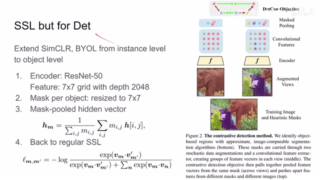
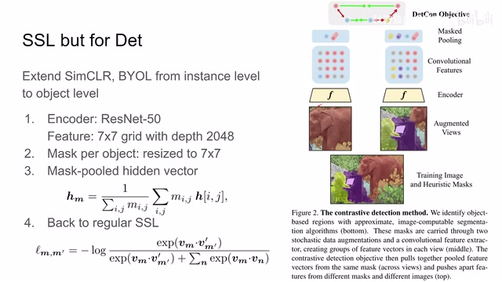
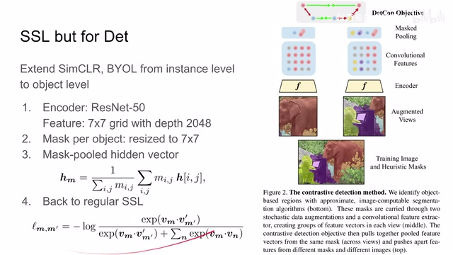
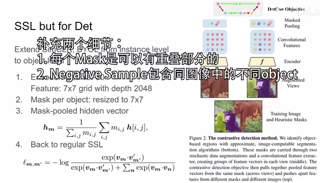
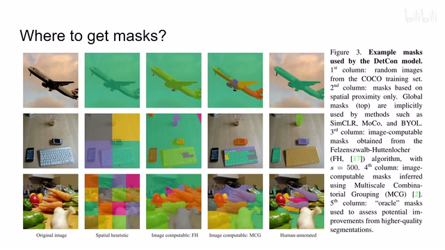
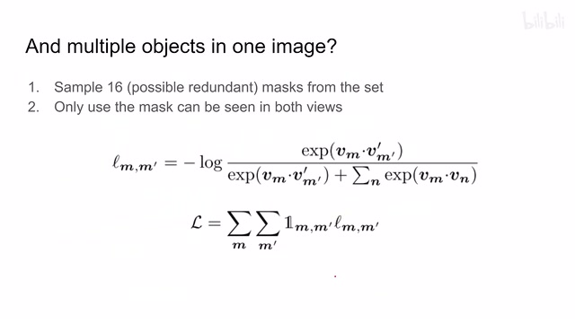
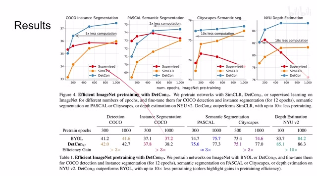
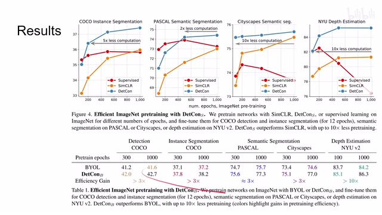
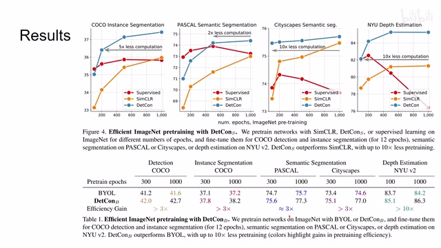

← 返回阅读库 · 原论文目录
论文讲解阅读文档 · 表征学习 · v192
Efficient Visual Pretraining with Contrastive Detection[2103.10957]
视频时长 00:04:17；讲解文字 2,174 字符；提取讲解画面 15 张。按视频原顺序阅读，每段文字保留时间戳。
文字来自整段视频的自动语音转写，按自然停顿分段，并与 PPT / 论文页面 / 演示画面对齐。未将讲解压缩为摘要；术语、数字和口述公式请结合画面及原论文核对。 阅读稿已校正规范部分明确术语误识别；原始逐字稿和每处修改记录另行保留。
讲解画面为源视频截图（640×360），不是可编辑 PPT 文件。全片按每秒 2 帧扫描内容变化，逐步展开页保留；连续动画保留代表画面。清晰度受源视频限制。
下载完整资料包 · 含离线 HTML、PDF、Word、全部 PPT 画面和字幕。
原论文与材料
Efficient Visual Pretraining with Contrastive Detection · 下载完整 PDF（13 页）
按时间阅读
00:00:00–00:00:11 · 画面 001
 00:00:00–00:00:11 · 画面 001
00:00:00–00:00:11 · 画面 001大家好，今天我们来快速水一篇论文，Efficient Visual Pretraining with Contrastive Detection。这篇思路很简单，就是 Contrastive Learning 用在 Object Detection 上面。我们之前介绍的像 SimCLR 、BYOL 都是做 Image Classification。
00:00:11–00:00:47 · 画面 002

00:00:11–00:00:47 · 画面 002那么虽然你可以把这个 feature transfer 到后面的这个 detection 到 segmentation，但是呢毕竟不是按照下游的这些任务来做训练，所以呢本文呢就提出，说我稍微对原来的这个框架进行一个改进，那么让它呢能够兼容这个下游的这个 detection 这个任务，甚至包括这个 segmentation 这些任务。那具体来看，从这个框架上呢还是一个标准的这个 SimCLR 或者是 BYOL 的一个构型，那么一张图像进来。
经过不同的 Data Augmentation 送到这个 Encoder 里面，然后得到一个 Feature。
00:00:47–00:00:48 · 画面 003
00:00:47–00:00:48 · 画面 00300:00:48–00:01:48 · 画面 004

00:00:48–00:01:48 · 画面 004这里我们的 encoder 是 resnet50，那么这里的 feature 用的是它的 global average pooling 之前的一层，它是一个 7x7x2048 这么一个 tensor。那么现在既然我们要从 instance level 整个图像的尺度缩到 object level，就是图像中每一个 object 它的尺度，对于每一个 object 我们都可以用一个 mask 去表示它在图像中占的具体的位置具体的像素，那么这里就把 mask 也缩放成 7x7。
那么这样一个图像有很多 object，也就意味着很多的 mask。那针对每个 mask 呢就可以提一个 feature。这里呢作者用了非常简单的方法，直接做一个 pooling，也就是把这个 mask 所覆盖的上面的这些所有的这个 feature 把它们求一个平均。那这样得到一个最终的长度为 2048 的这么一个 vector，就是这个 object 它的这个 representation 它的这个 feature。
那么现在对于每个 object 我都有一个 feature 那下面我都只需要做常规的这个 contrastive learning 就可以了比如说这样这个是 SimCLR 的设计那 byol 这里呢只是网络结构不一样它左边一只有这个 predictor 右边一只呢是这个 ema exponential moving average 但是它使用的 loss 呢还是这个 loss 那么这个呢就是本文的主要的思想就是把原来这个 image level 的这个 feature、instance level 的这个 feature 给它细化到这个 object level
00:01:48–00:01:49 · 画面 005

00:01:48–00:01:49 · 画面 00500:01:49–00:02:02 · 画面 006
00:01:49–00:02:02 · 画面 00600:02:02–00:02:13 · 画面 007

00:02:02–00:02:13 · 画面 007就是每个 object 我给它一个 feature，那下面呢很自然的我们就要提一个问题，就是说我们这里默认拿到这个 mask，但实际上这个 mask 应该从哪里来呢？那这里呢作者介绍了几种方法，比如说最 naive 的就是我按照这个网格把这个图像分成比如说这个 4x4 的网格，这个就是我们最初始的 mask，这是一种方法。那么还有像这个 fh 啊、mcg 啊这些方法都可以。
00:02:13–00:02:21 · 画面 008
00:02:13–00:02:21 · 画面 00800:02:21–00:03:00 · 画面 009

00:02:21–00:03:00 · 画面 009那最后实在不济你抓一个人过来吧，让他人手动给你标注一下对吧，这个都行。所以本文的重点只是实现一个 object level 的这个 contrastive learning，并没有在于这个 mask 是怎么提出的。不过后面马上我们会更新一篇文章去把这个 mask 的这个 proposal 也加到我们的这个 contrastive learning 加到这个 self-supervised learning 里面。
00:03:00–00:03:50 · 画面 010

00:03:00–00:03:50 · 画面 010那么接着往下解决，了这个 mask 的问题之后，在实际工程中呢，我们还会遇到一张图像，它里面包含 object 的数量是不一样的。那为了解决这个问题，做的很直接的就是，每张图像我都采 16 个这个 mask。那这 16 个呢，是允许重复的。这样子呢，就把每个图像的这个 object 的数量都给它限制到一起了，就方便你一整个 batch 做操作嘛。然后抽出来还不算完，我们一定要确保说，在 augmented 的两个 view 里面因为我们有不同的 scale，有不同的 random crop，他们可能不一定同时能够看到同一个物体。这里就是要确保一下，我们这个物体可以在两个 view 里面同时被看到，同时被看到就可以做 contrastive learning。如果看不到就没有，所以这里要加一个判断。那么有了这些细节，我们就可以高效的去做一个 contrastive learning
00:03:50–00:03:51 · 画面 011

00:03:50–00:03:51 · 画面 011来看作者汇报的结果，作者主要是研究的是用 ImageNet pre-train 之后，然后后面做 fine-tuning。你可以看到本文的方法很快的就超过了 supervised 的方法，包括下面的不同的任务。还有原文中汇报的很多实验 ablation 具体的细节，感兴趣的朋友非常推荐你去原文查看。好的，以上就是我对这篇文章的一个快速的整理，整理这篇主要是为了引出下面一篇。那么感谢您的收看，再见
00:03:51–00:04:01 · 画面 012
00:03:51–00:04:01 · 画面 01200:04:01–00:04:02 · 画面 013

00:04:01–00:04:02 · 画面 01300:04:02–00:04:17 · 画面 014

00:04:02–00:04:17 · 画面 01400:04:17–00:04:17 · 画面 015
00:04:17–00:04:17 · 画面 015转写与来源说明 · 0 个自动复核提示
保留 11 个原始语音片段，0 个片段触发自动复核提示。提示仅用于定位可能的术语、重复或识别问题，不等于已确认错误。
讲解画面为源视频截图（640×360），不是可编辑 PPT 文件。全片按每秒 2 帧扫描内容变化，逐步展开页保留；连续动画保留代表画面。清晰度受源视频限制。
原视频：paper/合集_2026-10-16_表征学习/[论文速览]Efficient Visual Pretraining with Contrastive Detection[2103.10957].mp4
SHA-256：bfa6eba8f0afa2dffaccb8636a4f5fba4e05b54ae50fff95dce0da99148b45f8
全文按视频语音与画面制作。原论文可从上方链接下载；完整资料包保留全文、原始逐字稿、字幕和校对记录。